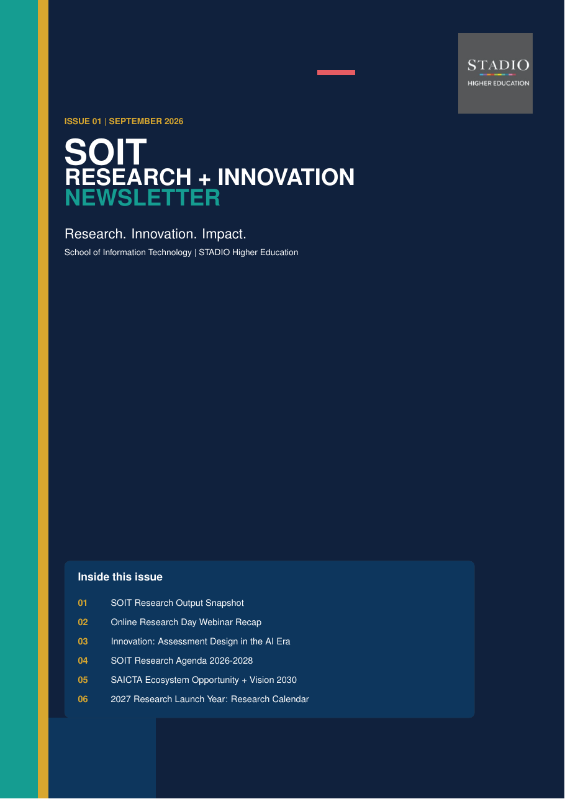

21
Tracked outputs
Conference and journal records represented in the September 2026 SOIT research snapshot.
A public-facing home for SOIT research outputs, scholarly activity, teaching innovation, industry engagement and the School's emerging research agenda.

The inaugural issue brings together the current SOIT research pipeline, the 2026 Research Day, assessment innovation in the AI era, the 2026-2028 research agenda, industry ecosystem opportunities and the 2027 Research Launch Year.
A concise research and innovation briefing for staff, collaborators, industry stakeholders and the wider STADIO community.
Conference and journal records represented in the September 2026 SOIT research snapshot.
A growing publication pipeline with additional records under review and in development.
A proposed rhythm of writing, webinars, Research Day, conference preparation and publication conversion.
The SOIT Research + Innovation Newsletter showcases research, innovation, collaboration and emerging initiatives within the School of Information Technology at STADIO Higher Education.
The publication is designed to make research activity more visible, support collaboration, share practical innovation and connect the School's work to institutional and industry priorities.